| HOME | PERSONAL | PROJECTS | LINKS |
Non sarebbe molto utile una procedura a cui poter chiedere:
"ti do questo sacchetto di resistenze, tutte quelle che ho in
laboratorio, mi trovi la rete che utilizzando il numero minimo di
componenti si avvicina di più al valore che desidero?".
Le funzioni parallel[] e serie[] sono gli operatori serie e parallelo; accettano una lista e restituiscono un numero.
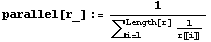
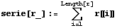
Le funzioni parallelrete[] e serierete[] applicano le funzioni precedenti a tutti gli elementi della lista; l'argomento di queste funzioni deve essere una lista di liste.
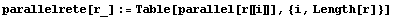
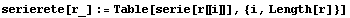
A cosa servono queste ultime funzioni?
Dato un insieme di resistenze e fissato uno schema, si può
costruitre uno schema differente scambiando l'ordine di applicazione
degli operatori serie e parallelo.
Allo scopo di trovare tutte le possibili combinazioni delle resistenze
date, si utilizzerà l'espressione ser[par[{}]] o l'analoga
par[ser[{}]] avendo l'accortezza di utilizzare per l'operatore
più interno parallelrete (serierete ).
Seguono funzioni ausiliarie utili alla costruzione di diverse funzioni per partizionare l'insieme delle resistenze di partenza in sottoinsiemi di ordine n, tenendo o no in cosiderazione le ripetizioni, le permutazioni ed eventuali simmetrie.
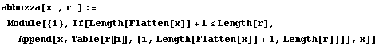
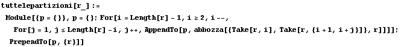
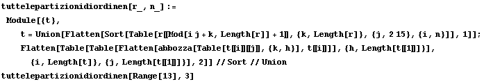
La funzione rete[] accetta una lista di elementi (distinti o no, senza ordine), e ne tira fuori una lista di tutte le possibili combinazioni (utilizzado sempre tutti gli elementi ). Se la lista è di numeri ho in uscita i valori numerici di tutte le resistenze equivalenti che posso ottenere.
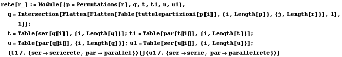
La funzione requivalent[], a differenza della rete[], considera
anche reti composte da sottoinsiemi di lunghezza qualsiasi.
In qesto modo scopro tutti valori di resistenza che posso ottenere da
un secchetto di resistenze assegnato.
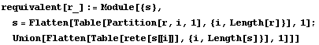
tovaequivalente[] invece accetta in ingresso i soli valori numerici
delle resisteze, e restituisce per ogni combinazione una lista composta
da: il valore della resistenza equivalente, lo scarto percentuale
rispetto al valore target, l'espressione simbolica corrispondente
utilizzando una lista di simboli del tipo {R1, R2, R3, ..}, e infine la
lista delle sostituzioni {R1 -> valore 1, R2 -> valore2, R3 ->
valore 3, ..}.
La lista complessiva di uscita è inoltre ordinata in senso
crescente secondo il campo degli scarti.
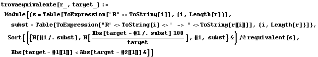
La funzione trovaeq[] trova tutti gli schemi possibili a partire da
un insieme costruito da resistenecomuni prelevando n+2 m valori di
resistenze "satndard", centrato sul valore più prossimo a target
e prendendo n/2+m valori successivi e n/2+m precedenti.
Inoltre la lista dei risultati, ordinati come sopra, è troncata
ai primi risultati che hanno scarto percentuale minore o uguale a err.
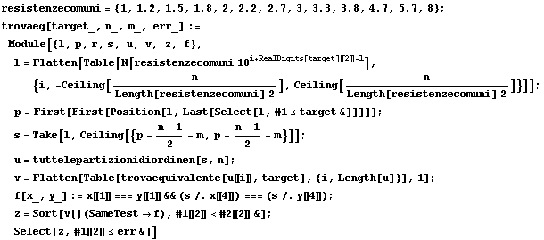
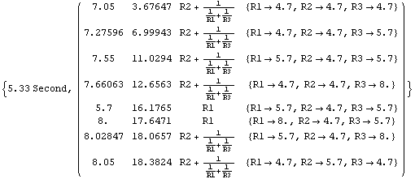
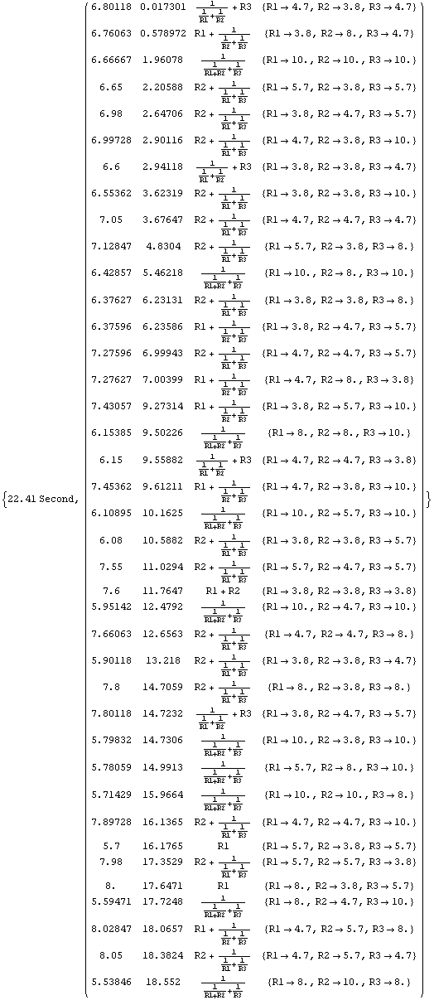
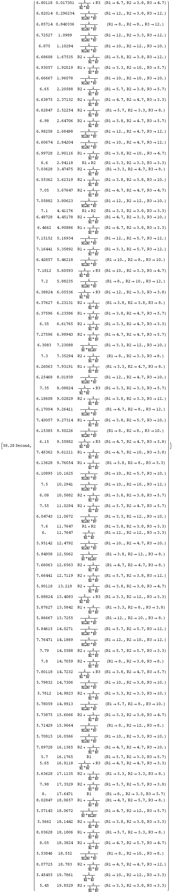
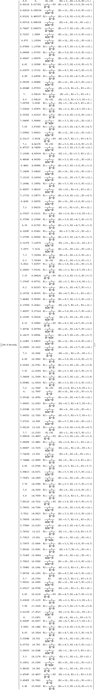
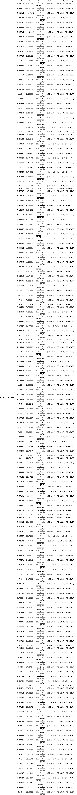
| HOME | PERSONAL | PROJECTS | LINKS |